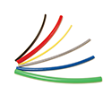
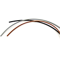
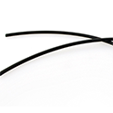
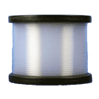

Tubing
Harrington is a Supplier of high quality tubing. Tubing is used in many applications, including food prep, structural support, liquid transportation, and other uses. Material types include PVC, Non-Phthalate PVC, Polyethylene, and Polyurethane. Select your product to request a quote, get additional information and purchasing options.

Parker NNR-4-035 1/4" OD x 0.180" ID x 0.035" Wall NR Series Natural Nylon Tubing, 250' Coilper FT · Sign in for price- Parker NNR-4-050 1/4" OD x 0.150" ID x 0.05" Wall NR Series Natural Nylon Tubing, 250' Coilper FT · Sign in for price
- Parker NNR-5-040 5/16" OD x 0.233" ID x 0.040" Wall NR Series Natural Nylon Tubing, 250' Coilper FT · Sign in for price
- Parker NNR-6-048 3/8" OD x 0.279" ID x 0.048" Wall NR Series Natural Nylon Tubing, 250' Coilper FT · Sign in for price
- Parker NNR-6-075 3/8" OD x 0.225" ID x 0.075" Wall NR Series Natural Nylon Tubing, 250' Coilper EA · Sign in for price
- Parker NNR-8-062 1/2" OD x 0.375" ID x 0.062" Wall NR Series Natural Nylon Tubing, 250' Coilper FT · Sign in for price
- Parker NNR-8-075 1/2" OD x 0.350" ID x 0.075" Wall NR Series Natural Nylon Tubing, 250' Coilper FT · Sign in for price
 Saint-Gobain P4501000060-100 1" OD x 7/8" ID x 0.062" Wall Versilon™ 450 Series Clear Chemours Teflon™ High Purity PFA Tubing, 100' Coilper EA · Sign in for price
Saint-Gobain P4501000060-100 1" OD x 7/8" ID x 0.062" Wall Versilon™ 450 Series Clear Chemours Teflon™ High Purity PFA Tubing, 100' Coilper EA · Sign in for price- Saint-Gobain P450250047-100 1/4" OD x 5/32" ID x 0.047" Wall Versilon™ 450 Series Clear Chemours Teflon™ High Purity PFA Tubing, 100' Coilper EA · Sign in for price
- Saint-Gobain P450250047-500 1/4" OD x 5/32" ID x 0.047" Wall Versilon™ 450 Series Clear Chemours Teflon™ High Purity PFA Tubing, 500' Coilper EA · Sign in for price
- Saint-Gobain P450375060-100 3/8" OD x 1/4" ID x 0.062" Wall Versilon ™ 450 Series Clear Chemours Teflon™ High Purity PFA Tubing, 100' Coilper EA · Sign in for price
- Saint-Gobain P450375060-50 3/8" OD x 1/4" ID x 0.062" Wall Versilon ™ 450 Series Clear Chemours Teflon™ High Purity PFA Tubing, 50' Coilper EA · Sign in for price
- Saint-Gobain P450500060-100 1/2" OD x 3/8" ID x 0.062" Wall Versilon ™ 450 Series Clear Chemours Teflon™ High Purity PFA Tubing, 100' Coilper EA · Sign in for price
- Saint-Gobain P450500060-50 1/2" OD x 3/8" ID x 0.062" Wall Versilon ™ 450 Series Clear Chemours Teflon™ High Purity PFA Tubing, 50' Coilper EA · Sign in for price
- Saint-Gobain P450500060-500 1/2" OD x 3/8" ID x 0.062" Wall Versilon ™ 450 Series Clear Chemours Teflon™ High Purity PFA Tubing, 500' Coilper EA · Sign in for price
- Saint-Gobain P450750060-100 3/4" OD x 5/8" ID x 0.062" Wall Versilon ™ 450 Series Clear Chemours Teflon™ High Purity PFA Tubing, 100' Coilper EA · Sign in for price
- Saint-Gobain P450750060-50 3/4" OD x 5/8" ID x 0.062" Wall Versilon ™ 450 Series Clear Chemours Teflon™ High Purity PFA Tubing, 50' Coilper EA · Sign in for price

Parker PAT12-BLK-250 3/4" OD x 0.566" ID x 0.092" Wall PAT Series Black Nylon Tubing, 250' Coilper FT · Sign in for price- Parker PAT12-BRN-250 3/4" OD x 0.566" ID x 0.092" Wall PAT Series Brown Nylon Tubing, 250' Coilper FT · Sign in for price
- Parker PAT4-BLK-250 1/4" OD x 0.170" ID x 0.040" Wall PAT Series Black Nylon Tubing, 250' Coilper FT · Sign in for price
- Parker PAT4-BRN-250 1/4" OD x 0.170" ID x 0.040" Wall PAT Series Brown Nylon Tubing, 250' Coilper FT · Sign in for price
- Parker PAT4-SIL-250 1/4" OD x 0.170" ID x 0.040" Wall PAT Series Gray Nylon Tubing, 250' Coilper FT · Sign in for price
- Parker PAT6-BLK-100 3/8" OD x 0.251" ID x 0.062" Wall PAT Series Black Nylon Tubing, 100' Coilper FT · Sign in for price
- Parker PAT6-BLK-500 3/8" OD x 0.251" ID x 0.062" Wall PAT Series Black Nylon Tubing, 500' Coilper FT · Sign in for price
- Parker PAT6-BRN-500 3/8" OD x 0.251" ID x 0.062" Wall PAT Series Brown Nylon Tubing, 500' Coilper FT · Sign in for price
- Parker PAT6-SIL-500 3/8" OD x 0.251" ID x 0.062" Wall PAT Series Gray Nylon Tubing, 500' Coilper FT · Sign in for price
- Parker PAT8-BLK-500 1/2" OD x 0.376" ID x 0.062" Wall PAT Series Black Nylon Tubing, 500' Coilper FT · Sign in for price
- Parker PAT8-BRN-500 1/2" OD x 0.376" ID x 0.062" Wall PAT Series Brown Nylon Tubing, 500' Coilper FT · Sign in for price
- Parker PAT8-SIL-100 1/2" OD x 0.376" ID x 0.062" Wall PAT Series Gray Nylon Tubing, 100' Coilper FT · Sign in for price

Parker PEFR-2.5-0500 5/32" OD x 0.096" ID x 0.030" Wall PEFR Series Black Polyethylene Flame Resistant Tubing, 500' Coilper FT · Sign in for price- Parker PEFR-6-0500 3/8" OD x 0.250" ID x 0.062" Wall PEFR Series Black Polyethylene Flame Resistant Tubing, 500' Coilper FT · Sign in for price

Altaflo PFA0201 1/8" OD x 1/16" ID x 0.030" Wall ALTAFLUOR® 400 Series Clear PFA Tubing, 1' Lengthper FT · Sign in for price- Altaflo PFA0201-50 1/8" OD x 1/16" ID x 0.030" Wall ALTAFLUOR® 400 Series Clear PFA Tubing, 50' Coilper EA · Sign in for price
- Altaflo PFA0301 3/16" OD x 1/16" ID x 0.062" Wall ALTAFLUOR® 400 Series Clear PFA Tubing, 1' Lengthper FT · Sign in for price
- Altaflo PFA0302 3/16" OD x 1/8" ID x 0.030" Wall ALTAFLUOR® 400 Series Clear PFA Tubing, 1' Lengthper FT · Sign in for price
- Altaflo PFA0302-100 3/16" OD x 1/8" ID x 0.030" Wall ALTAFLUOR® 400 Series Clear PFA Tubing, 100' Coilper FT · Sign in for price
- Altaflo PFA0402 1/4" OD x 1/8" ID x 0.062" Wall ALTAFLUOR® 400 Series Clear PFA Tubing, 1' Lengthper FT · Sign in for price
- Altaflo PFA0402-100 1/4" OD x 1/8" ID x 0.062" Wall ALTAFLUOR® 400 Series Clear PFA Tubing, 100' Coilper FT · Sign in for price
- Altaflo PFA0402-25 1/4" OD x 1/8" ID x 0.062" Wall ALTAFLUOR® 400 Series Clear PFA Tubing, 25' Coilper FT · Sign in for price
- Altaflo PFA0402-50 1/4" OD x 1/8" ID x 0.062" Wall ALTAFLUOR® 400 Series Clear PFA Tubing, 50' Coilper FT · Sign in for price